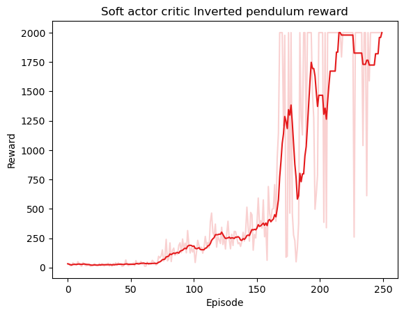

Trust region policy optimization#
Implementation#
Show code cell source
import matplotlib.pyplot as plt
import numpy as np
import torch
import random
import torch.nn as nn
import torch.optim as optim
import torch.nn.utils as utils
from torch.utils.data import Dataset, DataLoader
from torch.distributions import Normal
DEVICE = torch.device("cuda" if torch.cuda.is_available() else "cpu")
class ReplayBuffer:
def __init__(self, env, policy, maxlen=10000, device="cpu"):
self.env = env
self.buffer = deque(maxlen=maxlen)
self.maxlen = maxlen
self.fill(policy)
self.device = device
def __len__(self):
return len(self.buffer)
def fill(self, policy):
while len(self.buffer) < self.maxlen:
state = self.env.reset()
done = False
while not done:
with torch.no_grad():
action, log_action_prob = policy.select_action(state)
next_state, reward, done, _ = self.env.step(action)
self.buffer.append((state, action, log_action_prob, reward, next_state, done))
state = next_state
def add(self, state, action, log_action_prob, reward, next_state, done):
self.buffer.append((state, action, log_action_prob, reward, next_state, done))
def sample(self, n_samples):
state, action, log_action_prob, reward, next_state, done = zip(*random.sample(self.buffer, n_samples))
state = torch.tensor(state).float().to(self.device)
action = torch.tensor(action).float().to(self.device)
log_action_prob = torch.tensor(log_action_prob).float().to(self.device)
reward = torch.tensor(reward).float().to(self.device)
next_state = torch.tensor(next_state).float().to(self.device)
done = torch.tensor(done).float().to(self.device)
return state, action, log_action_prob, reward, next_state, done
class Policy(nn.Module):
def __init__(self, state_dim, action_dim, hidden_dim=128):
super(Policy, self).__init__()
self.state_dim = state_dim
self.action_dim = action_dim
self.net = nn.Sequential(
nn.Linear(state_dim, hidden_dim),
nn.ReLU(),
nn.Linear(hidden_dim, 2 * action_dim),
)
def forward(self, obs):
### [B, state_dim] --> [B, action_dim] * 2
obs = torch.tensor(obs).float().to(DEVICE)
if len(obs.shape) == 1:
obs = obs.unsqueeze(0)
mean, log_std = torch.chunk(self.net(obs), 2, dim=-1)
return mean, log_std
def select_action(self, state, action_range=1):
try:
state = torch.tensor(state).float()
mean, log_std = self.forward(state)
std = torch.exp(log_std)
action_dist = Normal(mean, std)
action = action_range * torch.tanh(mean + std * torch.randn_like(mean))
action_log_prob = action_dist.log_prob(mean + std * torch.randn_like(mean)) - torch.log(1 - action.pow(2) + 1e-6)
action_log_prob = action_log_prob.sum(-1, keepdim=True) # Sum over action dimensions
return action, action_log_prob
except Exception as e:
print(f"Exception occurred: {e}")
if 'log_std' in locals():
print(f"log_std: {log_std}")
raise
class ValueNetwork(nn.Module):
def __init__(self, state_dim, hidden_dim=128, out_dim=1):
super(ValueNetwork, self).__init__()
self.net = nn.Sequential(
nn.Linear(state_dim, hidden_dim),
nn.ReLU(),
nn.Linear(hidden_dim, hidden_dim),
nn.ReLU(),
nn.Linear(hidden_dim, out_dim)
)
def forward(self, state):
### [B, state_dim] --> [B, ]
return self.net(state).squeeze(-1)
class QValueNetwork(nn.Module):
def __init__(self, state_dim, action_dim, hidden_dim=128):
super(QValueNetwork, self).__init__()
self.net = nn.Sequential(
nn.Linear(state_dim + action_dim, hidden_dim),
nn.ReLU(),
nn.Linear(hidden_dim, hidden_dim),
nn.ReLU(),
nn.Linear(hidden_dim, 1)
)
def forward(self, state, action):
### [B, state_dim] + [B, ] -> [B, 1]
if len(action.shape) == 1:
action = action.unsqueeze(-1)
return self.net(torch.cat([state, action], dim=-1)).squeeze(-1)
class CQLAgent:
def __init__(self, env, tau, lr=1e-3, device="cpu"):
self.env = env
self.state_dim, self.action_dim = env.observation_space.shape[0], 6
self.policy = Policy(self.state_dim, self.action_dim)
self.value = ValueNetwork(self.state_dim)
self.target_value = ValueNetwork(self.state_dim)
for target_param, param in zip(self.target_value.parameters(), self.value.parameters()):
target_param.data.copy_(param.data)
self.q_value1 = QValueNetwork(self.state_dim, self.action_dim)
self.q_value2 = QValueNetwork(self.state_dim, self.action_dim)
self.policy_optimizer = optim.Adam(self.policy.parameters(), lr=lr)
self.value_optimizer = optim.Adam(self.value.parameters(), lr=lr)
self.q_value_optimizer1 = optim.Adam(self.q_value1.parameters(), lr=lr)
self.q_value_optimizer2 = optim.Adam(self.q_value2.parameters(), lr=lr)
self.policy_scheduler = torch.optim.lr_scheduler.StepLR(self.policy_optimizer, step_size=150, gamma=0.7)
self.value_scheduler = torch.optim.lr_scheduler.StepLR(self.value_optimizer, step_size=150, gamma=0.7)
self.q_value_scheduler1 = torch.optim.lr_scheduler.StepLR(self.q_value_optimizer1, step_size=150, gamma=0.7)
self.q_value_scheduler2 = torch.optim.lr_scheduler.StepLR(self.q_value_optimizer2, step_size=150, gamma=0.7)
self.buffer = ReplayBuffer(env, self.policy, maxlen=10000)
self.tau = tau
self.device = device
def learn_episode(self, max_steps=10000, gamma=1, batch_size=32):
self.policy.train()
self.value.train()
self.q_value1.train()
self.q_value2.train()
state = self.env.reset()
done = False
step = 0
train_value_loss, train_q_value1_loss, train_q_value2_loss, train_policy_loss = 0, 0, 0, 0
episode_reward = 0
while not done and step < max_steps:
self.policy_optimizer.zero_grad()
self.value_optimizer.zero_grad()
self.q_value_optimizer1.zero_grad()
self.q_value_optimizer2.zero_grad()
with torch.no_grad(): # Prevents gradient tracking
action, log_action_prob = self.policy.select_action(state)
next_state, reward, done, _ = self.env.step(action)
episode_reward += reward
self.buffer.add(state, action, log_action_prob, reward, next_state, done)
state = next_state
step += 1
## 0. Sample a batch
old_states, old_actions, old_log_probs, rewards, next_states, dones = self.buffer.sample(batch_size)
## 1. Train value function
with torch.no_grad(): # Prevents gradient tracking for new action values
new_actions, new_log_probs = self.policy.select_action(old_states, evaluate=True)
new_q_value1 = self.q_value1(old_states, new_actions)
new_q_value2 = self.q_value2(old_states, new_actions)
new_q_value = torch.min(new_q_value1, new_q_value2)
value_loss = 0.5 * nn.MSELoss()((new_q_value - new_log_probs).detach(), self.value(old_states))
value_loss.backward(retain_graph=True)
self.value_optimizer.step()
## 2. Train q-value function
with torch.no_grad(): # Prevents gradient tracking for target values
target = rewards + gamma * self.target_value(next_states) * (1 - dones)
old_q_value1 = self.q_value1(old_states, old_actions)
old_q_value2 = self.q_value2(old_states, old_actions)
q_value_loss1 = 0.5 * nn.MSELoss()(old_q_value1, target.detach())
q_value_loss2 = 0.5 * nn.MSELoss()(old_q_value2, target.detach())
q_value_loss1.backward(retain_graph=True)
q_value_loss2.backward(retain_graph=True)
self.q_value_optimizer1.step()
self.q_value_optimizer2.step()
## 3. Train policy
new_actions, new_log_probs = self.policy.select_action(old_states, evaluate=True)
new_q_value1 = self.q_value1(old_states, new_actions)
new_q_value2 = self.q_value2(old_states, new_actions)
new_q_value = torch.min(new_q_value1, new_q_value2)
policy_loss = (new_log_probs - new_q_value).mean()
policy_loss.backward(retain_graph=True)
self.policy_optimizer.step()
train_value_loss += value_loss.item()
train_q_value1_loss += q_value_loss1.item()
train_q_value2_loss += q_value_loss2.item()
train_policy_loss += policy_loss.item()
## 4. Update target value network
for target_param, param in zip(self.target_value.parameters(), self.value.parameters()):
target_param.data.copy_(target_param.data * (1 - self.tau) + param.data * self.tau)
return train_value_loss / step, train_q_value1_loss / step, train_q_value2_loss / step, train_policy_loss / step, episode_reward
def learn(self, n_episodes, max_steps=10000, gamma=1):
history = {"value_loss": [], "q_value1_loss": [], "q_value2_loss": [], "policy_loss": [], "reward": []}
for episode in range(n_episodes):
value_loss, q_value1_loss, q_value2_loss, policy_loss, reward = self.learn_episode(max_steps, gamma)
history["value_loss"].append(value_loss)
history["q_value1_loss"].append(q_value1_loss)
history["q_value2_loss"].append(q_value2_loss)
history["policy_loss"].append(policy_loss)
history["reward"].append(reward)
print(f'Episode {episode}: loss: {(value_loss, q_value1_loss, q_value2_loss, policy_loss)}, reward {reward}') if episode % 10 == 0 else None
return history
env = gym.make("InvertedPendulumBulletEnv-v0")
agent = SoftActorCriticAgent(env, lr=1e-9, tau=0.005)
history = agent.learn(50, gamma=0.99, max_steps=2000)
